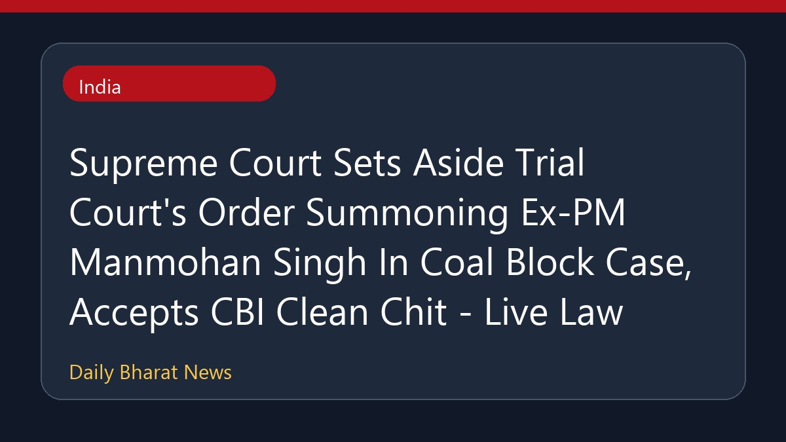

सुप्रीम कोर्ट ने कोयला ब्लॉक मामले में पूर्व पीएम मनमोहन सिंह को दी राहत

सुप्रीम कोर्ट ने कोयला ब्लॉक मामले में पूर्व प्रधानमंत्री मनमोहन सिंह को समन जारी करने के ट्रायल कोर्ट के आदेश को खारिज कर दिया है। अदालत ने इस मामले में सीबीआई की क्लीन चिट को स्वीकार कर लिया है। इसके साथ ही शीर्ष अदालत के इस फैसले के बाद राजनीतिक प्रतिक्रियाएं भी सामने आई हैं, जहां कांग्रेस पार्टी ने भाजपा पर निशाना साधा है और देश से माफी मांगने की मांग की है। हालांकि, इस मामले से जुड़ी विस्तृत और अन्य सभी जानकारियाँ अभी सीमित रूप से ही उपलब्ध हैं।